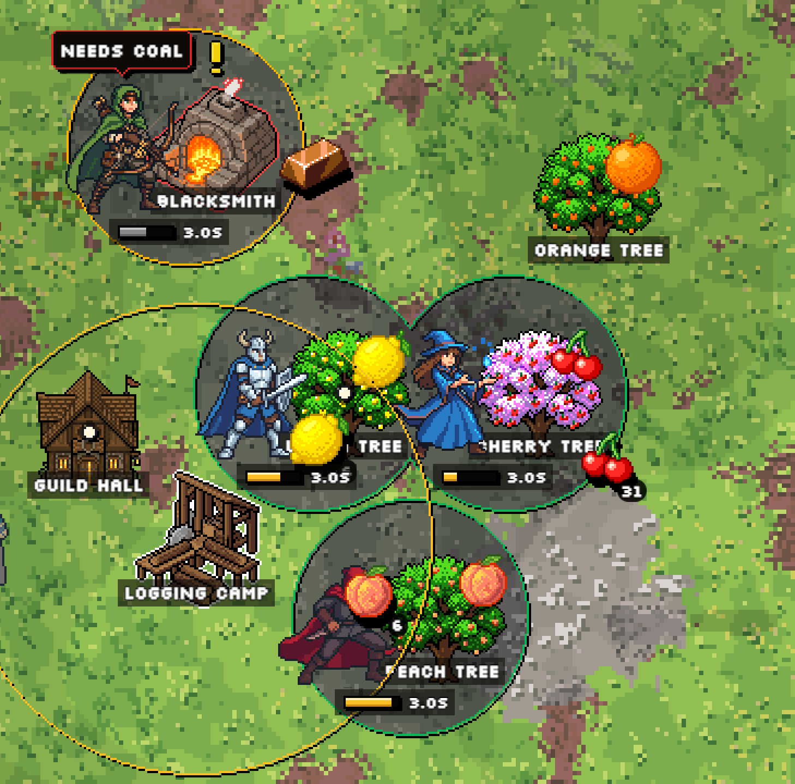
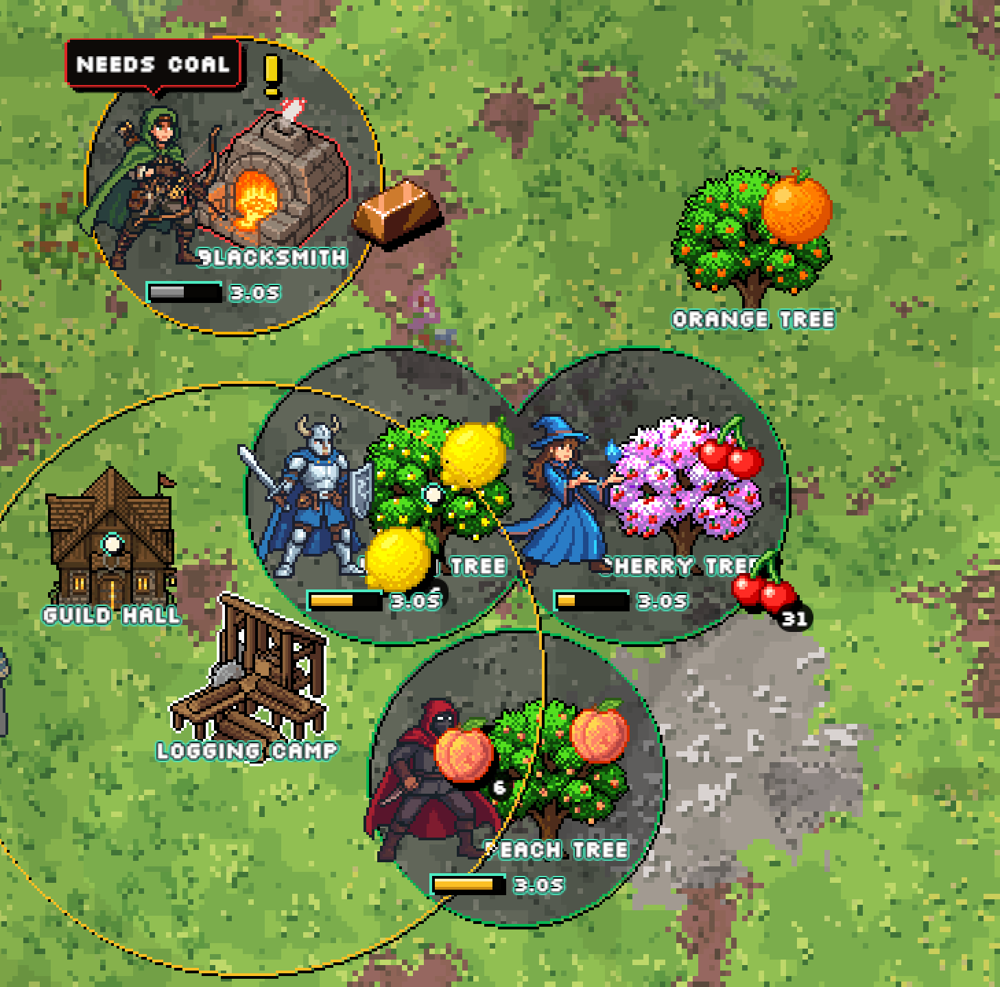
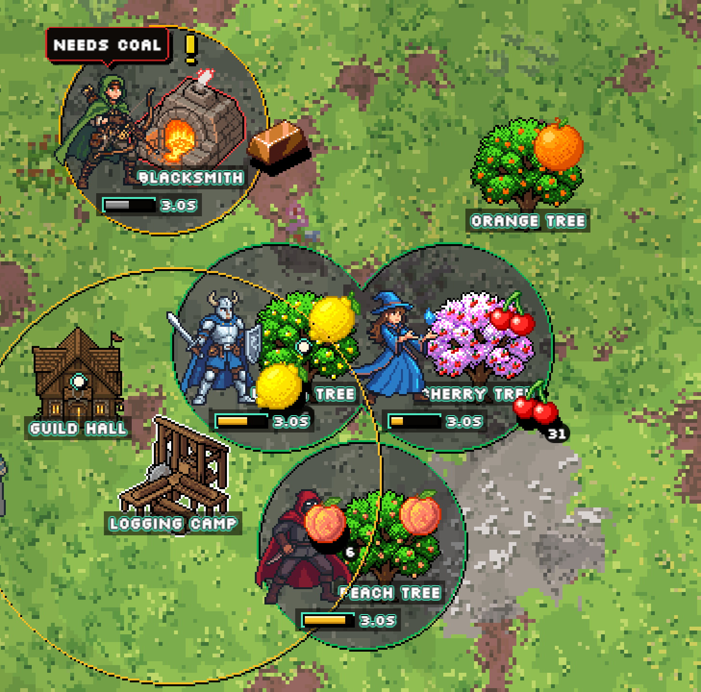
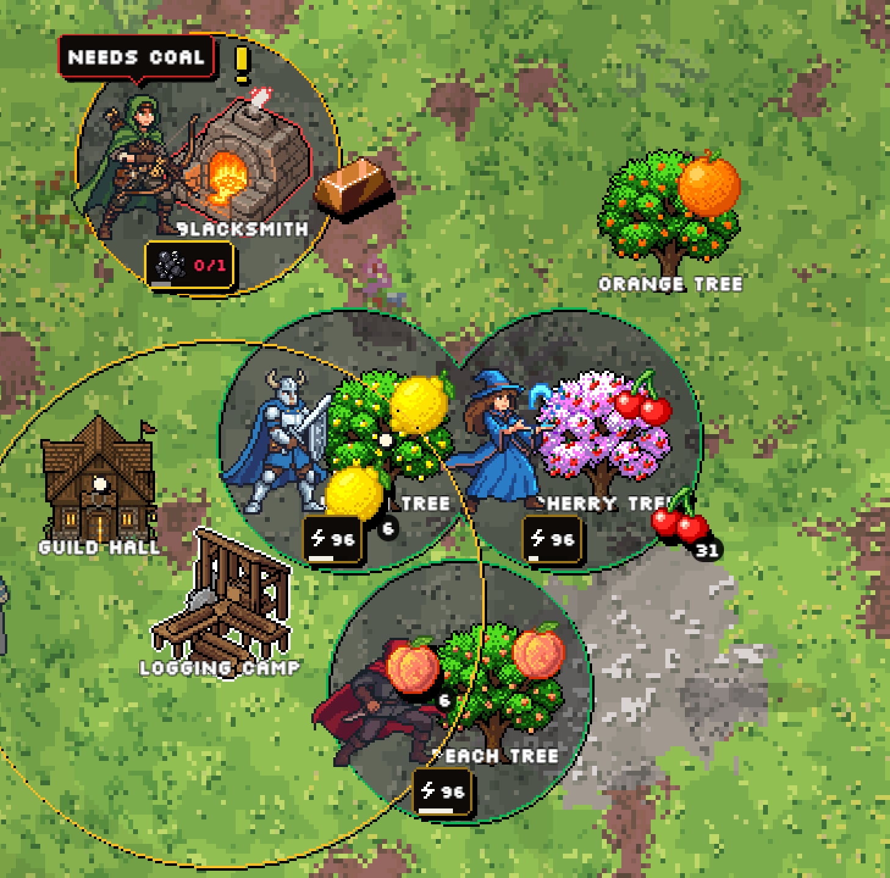
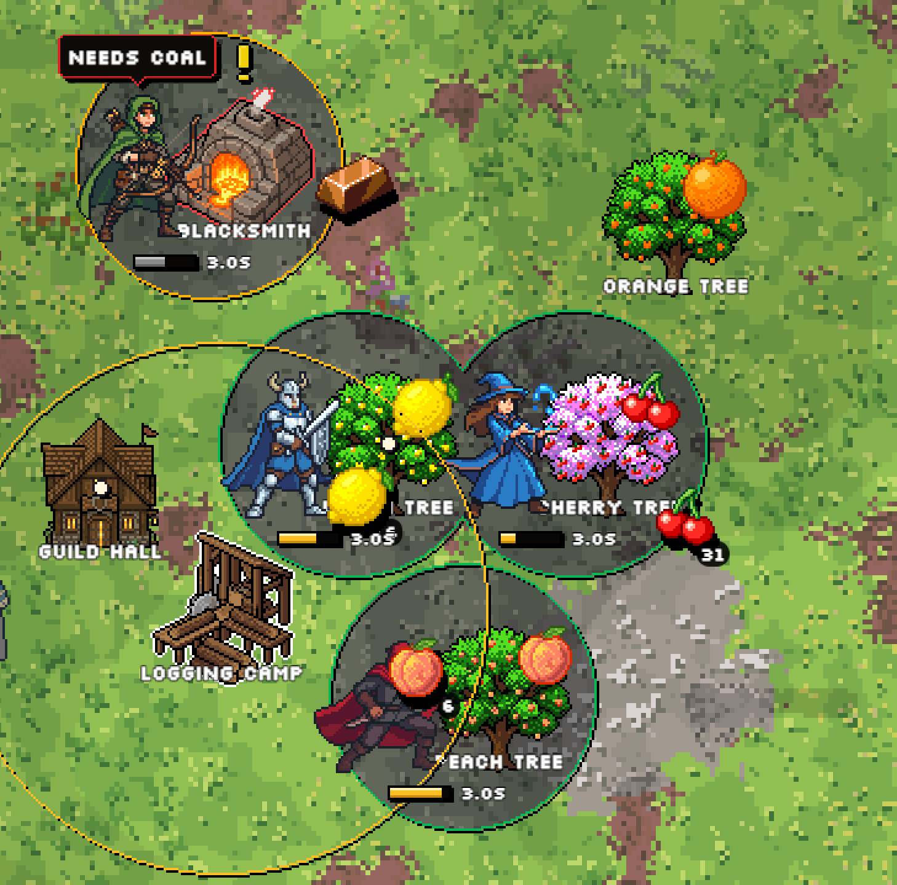
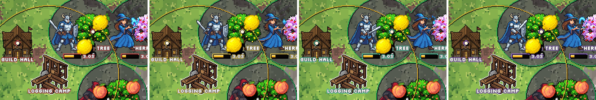
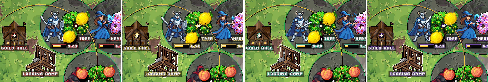
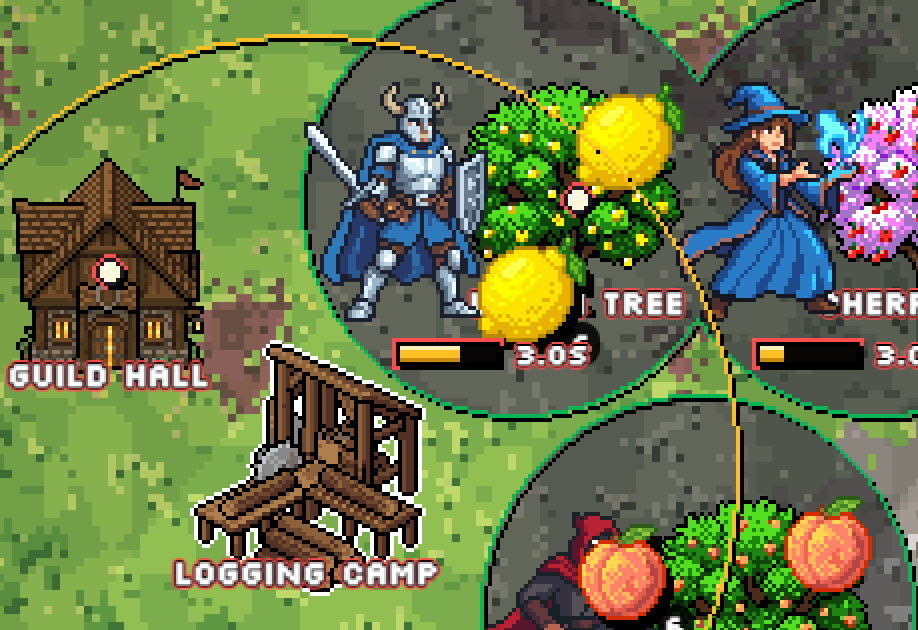
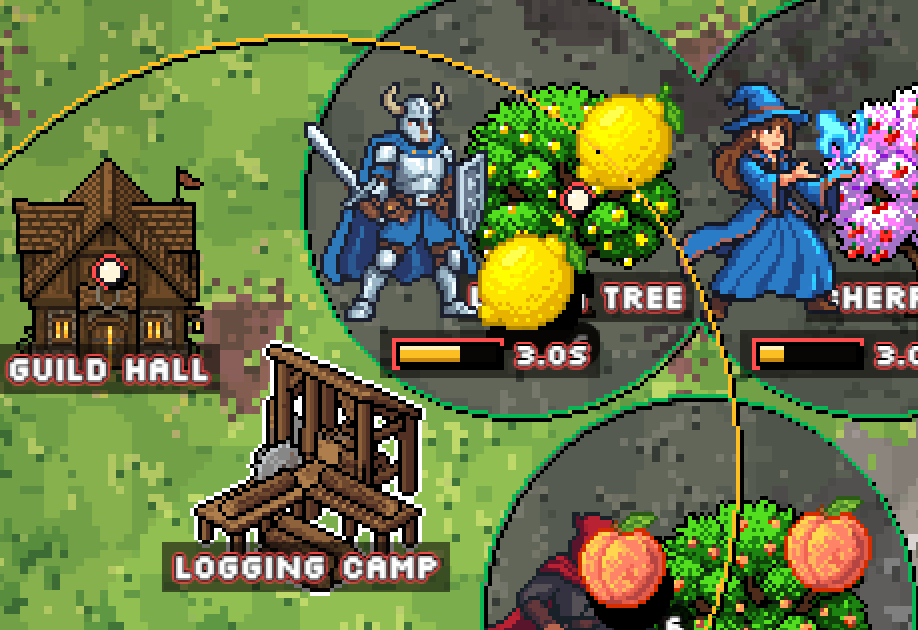

Names, reach dots and the work bar: pick a look
The same busy scene five times, from the running game: four heroes on four Tokens (the furnace, named Blacksmith, is stuck for Coal), the pointer resting on the Logging Camp so its reach ring and dots show, and every Token's name shown at once so the label can be judged on light, dark and busy ground (in the game only the hovered Token's name shows). The work plate is replaced by the proposed progress bar and the time one cycle takes, in A, B, C and P. Pick one letter for the name and dot look; say if the bar itself should change.












The shimmer moving
A closer crop round the Logging Camp and the lemon tree. Each strip shows four moments of the 4 s colour cycle side by side; the moving pictures loop the whole cycle in 16 steps.




The proposed bar
- Where the plate stood, under the Token's name: a bar 24 art pixels long and 4 tall, in a one-art-pixel black outline with a hard black shadow one art pixel down-right (as the dots and the reach ring have).
- It fills in whole art-pixel steps, gold with a light top row and a dark bottom row; grey while the job is blocked (the Blacksmith here).
- Beside it, the time one cycle takes ("3.0s"), in the small pixel font with the usual black outline. It stays put while nothing changes, so a speed boost shows as a smaller number.
Worth knowing
- The colour cycle passes through red, the game's colour for a problem; the stills are held at teal for that reason. If B or C is picked, the cycle could leave red out.
- Floor loot lies over names (the lemons over "Lemon Tree"): that is today's layer order, not part of any look.
- The dark job areas round each worked Token are today's; the new job areas are a separate pick.
- The reach dots are today's (every Token in the ring); dots only on what the Token affects come later.